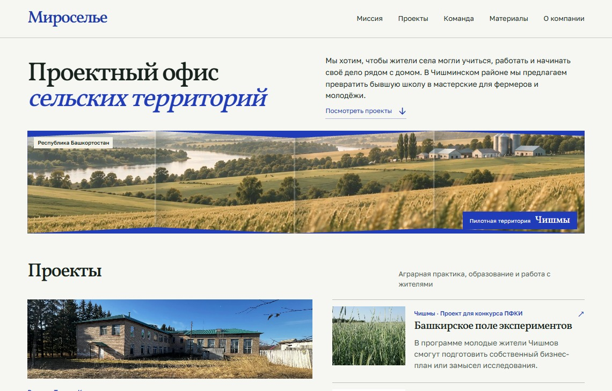
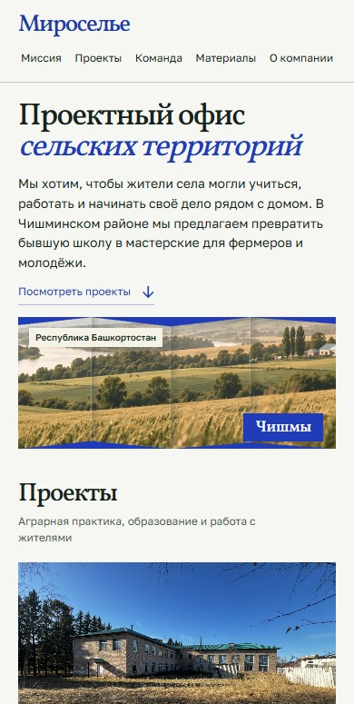
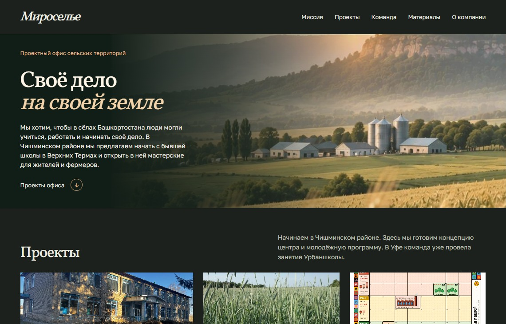
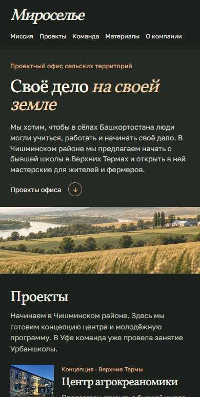

Территориальный атлас
Светлый лист, панорама поля и синий акцент. Проекты собраны как материалы о разных территориях.


Открыть атлас ↗Светлый лист, панорама поля и синий акцент. Проекты собраны как материалы о разных территориях.


Открыть атлас ↗Тёмный фон и тёплый свет над полем. От миссии офиса посетитель переходит к проектам и людям, которые будут над ними работать.


Открыть бюро ↗